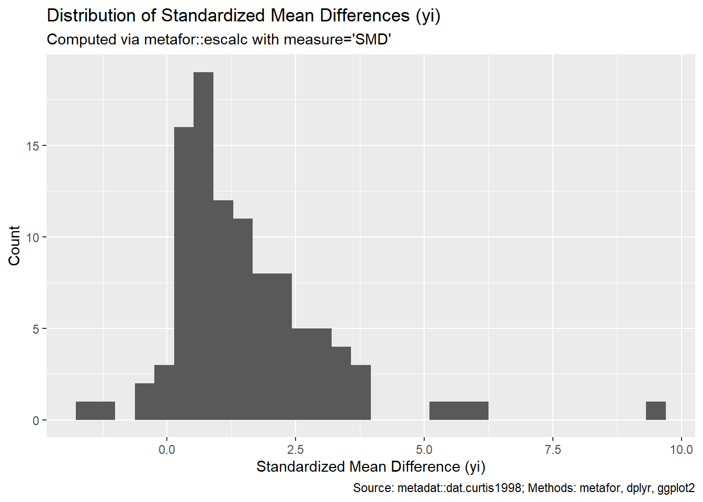

options(repos = c(CRAN = "https://cran.rstudio.com/"))
install.packages("dplyr")
install.packages("knitr")
install.packages("ggplot2")
install.packages("metadat")
install.packages("meta")
install.packages("metafor") # calculate effect sizes and conduct meta-regression
library(dplyr)
library(knitr)
library(ggplot2)
library(metadat)
library(meta)
library(metafor)Example Analysis
Statistical meta-analysis is a method used across studies to systematically combine and analyze data from multiple studies on a particular topic. Oftentimes, researchers encounter conflicting results across studies, i.e. a finding that appears statistically significant in one study but lacks significance in another. This variance could stem from differences in study designs, sample characteristics, or many other factors. Through meta-analysis, we can navigate through conflicting results, derive more reliable conclusions about the relationships between variables, and systematic approach to interpret this variability in findings across studies.

In this report, we will practice meta-analysis using a dataset from the metadat package in R. This dataset contains 102 studies that examined the effects of elevated CO2 levels in woody plant mass by comparing above and below-ground biomass (measured in grams) of plants exposed to ambient CO2 levels (control group) versus elevated CO2 levels (treatment group).
NoteWant to know more?
If you want to read more about meta-analysis, here is a link to a book to learn more.
Research question:
We are interested in determining if there is an overall difference between in above and below-ground biomass of plants exposed to C02 levels (control group) versus elevated C02 levels (treatment group).
Intended Audience:
The intended audience for this report is students in statistics hoping to get quick overview about meta-analysis and see an example for conducting meta-analysis.
Analysis
We can begin by loading the data and the necessary packages to condudct meta-analysis.
Data Source and Dictionary
The dataset consists of 102 studies with 20 variables. Eleven are numeric variables and nine are character variables. These studies compared above and below-ground biomass (measured in grams) of plants exposed to ambient CO2 levels (control group) versus elevated CO2 levels (treatment group).
This dataset comes from the metadat package, and the original study was conducted by Peter S. Curtis and Xianzhong Wang. The article can be found here).
Data Dictionary
| Variable Name | Variable Definition |
|---|---|
| id | observation number |
| paper | paper number |
| genus | name of species |
| species | name of species |
| fungrp | plant functional group |
| co2.ambi | ambient CO2 level control group |
| co2.elev | elevated CO2 level for treatmet group |
| units | units for C02 exposure levels |
| time | maximum length of time days of C02 exposure |
| pot | growing methods |
| method | CO2 exposure facility |
| stock | planting stock code |
| xtrt | interacting treatment code |
| level | interaction treatment level |
| m1i | mean plant mass under elevated CO2 level for treatment group |
| sd1i | standard deviation of plant mass under elevated CO2 level for treatment group |
| n1i | number of observations under elevated CO2 level for treatment group |
| m2i | mean plant mass under ambient CO2 level for control group |
| sd2i | standard deviation of plant mass under ambient CO2 level for control group |
| n2i | number of observations under ambient CO2 level for control group |
Exploratory Analysis
Snapshot into Top and Bottom of Data
First, we want to explore the data by examining the first and last few rows of the data, and subsetting the data based on specific variables of interest as they relate to our research question. These variables include the name of the plant species (species), functional group of the plants (fungrp), how long the plants were exposed to C02 (time), the CO2 exposure facility (method), the planting stock (stock), and the name of the species (genus).
In order to conduct our statistical analysis, we also need to obtain the mean plant mass for each study under the control group and treatment group (m1i and m2i), the standard deviations of each study (sd1i and sd2i), and the number of plants under the different treatments (n1i and n2i).
# loading in data
metadata <- metadat::dat.curtis1998
# check for missing values
# sum(is.na((metadata))) # no missing data found
head(metadata) id paper genus species fungrp co2.ambi co2.elev units time pot method
1 21 44 ALNUS RUBRA N2FIX 350 650 ul/l 47 0.5 GC
2 22 44 ALNUS RUBRA N2FIX 350 650 ul/l 47 0.5 GC
3 27 121 ACER RUBRUM ANGIO 350 700 ppm 59 2.6 GH
4 32 121 QUERCUS PRINUS ANGIO 350 700 ppm 70 2.6 GH
5 35 121 MALUS DOMESTICA ANGIO 350 700 ppm 64 2.6 GH
6 38 121 ACER SACCHARINUM ANGIO 350 700 ppm 50 2.6 GH
stock xtrt level m1i sd1i n1i m2i sd2i n2i
1 SEED FERT HIGH 6.8169 1.7699820 3 3.9450 1.1157970 5
2 SEED FERT CONTROL 2.5961 0.6674662 5 2.2512 0.3275839 5
3 SEED NONE . 2.9900 0.8560000 5 1.9300 0.5520000 5
4 SEED NONE . 5.9100 1.7420000 5 6.6200 1.6310000 5
5 SEED NONE . 4.6100 1.4070000 4 4.1000 1.2570000 4
6 SEED NONE . 10.7800 1.1630000 5 6.4200 2.0260000 3tail(metadata) id paper genus species fungrp co2.ambi co2.elev units time pot
97 755 2223 BETULA ALLEGHANIENSIS ANGIO 350 700 ul/l 165 1.25
98 756 2223 BETULA ALLEGHANIENSIS ANGIO 350 700 ul/l 165 1.25
99 757 2223 BETULA ALLEGHANIENSIS ANGIO 350 700 ul/l 165 1.25
100 765 2224 QUERCUS RUBRA ANGIO 385 642 ul/l 60 6
101 774 2224 ACER SACCHARUM ANGIO 385 642 ul/l 60 6
102 783 2224 POPULUS TREMULOIDES ANGIO 385 642 ul/l 60 6
method stock xtrt level m1i sd1i n1i m2i sd2i n2i
97 GH SEED FERT LOW 1.90 0.2205 6 1.48 0.1715 6
98 GH SEED LIGHT LOW 14.45 1.6657 6 8.71 1.5187 6
99 GH SEED FERT+L . 16.98 0.5389 6 16.59 0.9553 6
100 GC SEED NONE . 16.90 1.7321 3 7.20 2.5981 3
101 GC SEED NONE . 7.20 1.7321 3 4.60 1.7321 3
102 GC SEED NONE . 102.60 6.2354 3 69.70 3.6373 3# subsetting based on variables of dat_interest
dat_interest <- metadata %>%
select(n1i, m1i, sd1i, n2i, m2i, sd2i, fungrp, time, method, stock, genus)Meta-Analysis
In order to conduct meta-analysis, we need to calculate the effect sizes of each study in our dataset.
Effect Size Calculation
# create data frame of effect sizes
effect_size_dat <- escalc("SMD", n1i = n1i, n2i = n2i, m1i = m1i, m2i = m2i, sd1i = sd1i, sd2i = sd2i, data = dat_interest, append = TRUE)To get a better idea of the effect sizes (i.e. the standardized mean differences), we can summarize the means and variances of each study based on the functional group of the plant and the facility where they were exposed to CO2. This table is displayed the margin. Since all the effect sizes for each combination of methods and functional groups is positive, we expect that overall the plants in these categories who were exposed to more CO2 had higher plant masses than the plants exposed to the standard amount of CO2.
# want to summarize data based on functional group (fungrp)and C02 exposure (method)
sum_table <- effect_size_dat %>%
group_by(fungrp, method) %>%
summarise(
k = n(),
mean_yi = mean(yi, na.rm = TRUE),
mean_vi = mean(vi, na.rm = TRUE),
.groups = "drop" # drops grouping once table is made
) %>%
arrange(desc(k)) %>%
mutate(
mean_yi = round(mean_yi, 3),
mean_vi = round(mean_vi, 3)
)
sum_table %>%
kable(
caption = "Moderator Summary by Functional Group and Method",
align = "lccc" # aligns columns, l=left and c=center
)| fungrp | method | k | mean_yi | mean_vi |
|---|---|---|---|---|
| ANGIO | GH | 58 | 1.314 | 0.780 |
| GYMNO | GC | 18 | 1.158 | 0.245 |
| ANGIO | GC | 13 | 2.565 | 1.258 |
| ANGIO | OTC | 7 | 2.142 | 0.757 |
| GYMNO | GH | 4 | 2.326 | 1.954 |
| N2FIX | GC | 2 | 1.207 | 0.579 |
Effect Size (Mean) Compared to Time Across Funtional Groups
We can also plot the effect sizes against the time they were exposed to CO2, to see if there is a relationship between the differences in plant masses compared to the time the plants were exposed to CO2. We can separate this by functional group to see if the group adds an additional component to the relationship.
ggplot(effect_size_dat, aes(x = time, y = yi)) +
geom_point(alpha = 0.7) +
# scales = free_y means only x's are fixed
facet_wrap(~ fungrp, scales = "free_y") +
labs(
title = "Effect Size vs. Time",
subtitle = "Comparing Relations Across Functional Groups",
x = "Time",
y = "Standardized Mean Difference (yi)",
caption = "SMD = Standardized Mean Difference"
)
Distribution of Study Means
Lastly, we can examine the distribution of the standardized mean differences (SMD) for each study to get a better sense on how many studies have a positive SMD. A positive SMD value indiciates that the elevated CO2 levels result in a higher biomass for plants.
ggplot(effect_size_dat, aes(x = yi)) +
geom_histogram(bins=30) +
labs(
title = "Distribution of Standardized Mean Differences (yi)",
subtitle = "We count the effect sizes that fall into specific SMD ranges",
x = "Standardized Mean Difference (yi)",
y = "Count",
caption = "Majority of SMD's are positive"
)
We can see that majority of the SMD’s are positive. This means that potentially the overall SMD obtained from our meta-analysis model could be significant, i.e. plants given more CO2 will have a higher biomass. We can run the full analysis model to determine if our insight is correct.
Meta-Analysis Models
There are two types of models we can use to conduct a meta-analysis study: fixed effect model and random effects model. Under the fixed effect model, we assume that all studies share a common, but unknown, true effect size. Under the random effects model, we assume that the true effect size is different for each study and that these true effect sizes are normally distributed about some average, unknown effect size. We can use the test of heterogeniuty to determine which model is bets for our data. We can then assess if our overall effect size, i.e. mean difference, is significant.
# Standardized Mean Difference
# ====== calculates SMD for each study
SMD_results <- metacont(n1i, m1i, sd1i, n2i, m2i, sd2i, sm = "SMD", data = metadata)
summary(SMD_results) SMD 95%-CI %W(common) %W(random)
1 1.8222 [-0.0577; 3.7020] 0.4 0.8
2 0.5922 [-0.6899; 1.8743] 0.8 1.2
3 1.3286 [-0.1124; 2.7695] 0.6 1.1
4 -0.3798 [-1.6371; 0.8774] 0.8 1.2
5 0.3321 [-1.0715; 1.7356] 0.6 1.1
6 2.5137 [ 0.3058; 4.7216] 0.3 0.6
7 0.5405 [-1.1334; 2.2144] 0.5 0.9
8 2.0471 [-0.4056; 4.4997] 0.2 0.5
9 1.1710 [ 0.4951; 1.8468] 2.8 1.8
10 0.8035 [ 0.0796; 1.5275] 2.4 1.7
11 1.2478 [ 0.5881; 1.9076] 2.9 1.8
12 0.8135 [ 0.2229; 1.4042] 3.7 1.9
13 0.9234 [-0.1225; 1.9693] 1.2 1.4
14 0.4358 [-0.5592; 1.4309] 1.3 1.5
15 0.0687 [-0.9117; 1.0490] 1.3 1.5
16 0.3507 [-0.9040; 1.6054] 0.8 1.2
17 0.7625 [-0.0714; 1.5964] 1.8 1.6
18 0.0356 [-1.2041; 1.2754] 0.8 1.2
19 0.3999 [-0.8593; 1.6590] 0.8 1.2
20 0.5858 [-0.6954; 1.8670] 0.8 1.2
21 1.6208 [ 0.0911; 3.1504] 0.5 1.0
22 0.8149 [-0.5041; 2.1338] 0.7 1.2
23 0.8371 [-0.3642; 2.0385] 0.9 1.3
24 2.6024 [ 1.3501; 3.8547] 0.8 1.2
25 9.5026 [ 7.3444; 11.6609] 0.3 0.6
26 1.5618 [ 0.2029; 2.9208] 0.7 1.1
27 3.0319 [ 1.1840; 4.8797] 0.4 0.8
28 0.5020 [-0.9240; 1.9279] 0.6 1.1
29 0.9103 [-0.6034; 2.4240] 0.6 1.0
30 -0.2939 [-1.6937; 1.1058] 0.7 1.1
31 0.8706 [-0.6327; 2.3738] 0.6 1.0
32 0.8207 [-0.6700; 2.3113] 0.6 1.0
33 0.5385 [-0.3573; 1.4344] 1.6 1.6
34 1.6557 [ 0.6107; 2.7007] 1.2 1.4
35 1.2674 [ 0.2886; 2.2462] 1.3 1.5
36 1.3182 [ 0.3315; 2.3049] 1.3 1.5
37 0.2387 [-0.6416; 1.1191] 1.6 1.6
38 0.5022 [-0.3912; 1.3955] 1.6 1.6
39 3.0826 [-3.2691; 9.4343] 0.0 0.1
40 3.8360 [-3.9337; 11.6056] 0.0 0.1
41 2.0126 [-2.3921; 6.4174] 0.1 0.2
42 0.8117 [-1.7127; 3.3360] 0.2 0.5
43 1.2879 [ 0.5179; 2.0579] 2.2 1.7
44 0.3481 [-0.3507; 1.0470] 2.6 1.8
45 1.5619 [-2.0730; 5.1967] 0.1 0.3
46 0.4997 [-1.6913; 2.6908] 0.3 0.6
47 1.5460 [-2.0627; 5.1546] 0.1 0.3
48 -1.3882 [-4.7414; 1.9650] 0.1 0.3
49 3.8415 [-3.9386; 11.6217] 0.0 0.1
50 2.3499 [-2.6555; 7.3553] 0.1 0.2
51 0.5384 [-1.6876; 2.7644] 0.3 0.6
52 1.7594 [-2.2070; 5.7258] 0.1 0.2
53 1.7650 [-2.2110; 5.7410] 0.1 0.2
54 0.3397 [-1.7302; 2.4097] 0.3 0.7
55 1.0041 [-1.7734; 3.7815] 0.2 0.4
56 -0.0128 [-1.9729; 1.9473] 0.3 0.7
57 0.6599 [-1.6884; 3.0082] 0.2 0.6
58 0.1446 [-1.8358; 2.1249] 0.3 0.7
59 2.3289 [-2.6386; 7.2964] 0.1 0.2
60 2.5738 [-2.8381; 7.9858] 0.0 0.1
61 0.6969 [-1.6921; 3.0860] 0.2 0.6
62 0.2752 [-1.7576; 2.3080] 0.3 0.7
63 5.8589 [ 2.3898; 9.3280] 0.1 0.3
64 1.5139 [ 0.0181; 3.0098] 0.6 1.0
65 0.4956 [ 0.0892; 0.9020] 7.7 2.0
66 0.9688 [ 0.5450; 1.3926] 7.1 2.0
67 0.8106 [ 0.3938; 1.2274] 7.4 2.0
68 0.7546 [ 0.3400; 1.1692] 7.4 2.0
69 0.6466 [-0.2576; 1.5509] 1.6 1.6
70 1.3238 [ 0.3363; 2.3114] 1.3 1.5
71 1.1142 [ 0.1577; 2.0707] 1.4 1.5
72 1.4304 [ 0.4254; 2.4354] 1.3 1.5
73 1.2300 [ 0.2569; 2.2031] 1.4 1.5
74 2.2130 [ 1.0525; 3.3735] 0.9 1.3
75 2.5799 [ 0.6899; 4.4700] 0.4 0.8
76 0.6666 [-0.6266; 1.9599] 0.8 1.2
77 2.4663 [-2.7498; 7.6824] 0.0 0.1
78 6.0967 [-6.0123; 18.2058] 0.0 0.0
79 2.0771 [-2.4412; 6.5954] 0.1 0.2
80 2.1243 [-2.4775; 6.7261] 0.1 0.2
81 3.2603 [ 1.0723; 5.4484] 0.3 0.6
82 0.3042 [-0.8368; 1.4453] 1.0 1.3
83 2.8525 [ 1.0722; 4.6328] 0.4 0.8
84 2.8741 [ 1.0857; 4.6624] 0.4 0.8
85 1.6679 [ 0.2799; 3.0558] 0.7 1.1
86 3.5559 [ 1.5026; 5.6093] 0.3 0.7
87 0.9400 [-0.2788; 2.1589] 0.9 1.3
88 2.4148 [ 0.7917; 4.0378] 0.5 0.9
89 3.7148 [ 1.5972; 5.8324] 0.3 0.7
90 1.0962 [-0.1526; 2.3450] 0.8 1.2
91 0.2744 [-0.8649; 1.4137] 1.0 1.3
92 1.7776 [ 0.3584; 3.1968] 0.6 1.1
93 2.2293 [ 0.6690; 3.7895] 0.5 1.0
94 -1.5839 [-2.9488; -0.2190] 0.7 1.1
95 2.2885 [ 0.7085; 3.8685] 0.5 1.0
96 2.9292 [ 1.1202; 4.7382] 0.4 0.8
97 1.9620 [ 0.4875; 3.4366] 0.6 1.0
98 3.3230 [ 1.3624; 5.2837] 0.3 0.7
99 0.4640 [-0.6895; 1.6175] 1.0 1.3
100 3.5052 [-0.0571; 7.0675] 0.1 0.3
101 1.1977 [-0.7371; 3.1325] 0.3 0.8
102 5.1427 [ 0.2067; 10.0786] 0.1 0.2
Number of studies: k = 102
Number of observations: o = 1577 (o.e = 787, o.c = 790)
SMD 95%-CI z p-value
Common effect model 0.9615 [0.8484; 1.0745] 16.67 < 0.0001
Random effects model 1.1550 [0.9482; 1.3619] 10.94 < 0.0001
Quantifying heterogeneity (with 95%-CIs):
tau^2 = 0.5019 [0.4137; 1.4285]; tau = 0.7085 [0.6432; 1.1952]
I^2 = 52.0% [39.7%; 61.7%]; H = 1.44 [1.29; 1.62]
Test of heterogeneity:
Q d.f. p-value
210.28 101 < 0.0001
Details of meta-analysis methods:
- Inverse variance method
- Restricted maximum-likelihood estimator for tau^2
- Q-Profile method for confidence interval of tau^2 and tau
- Calculation of I^2 based on Q
- Hedges' g (bias corrected standardised mean difference; using exact formulae)Based on our output above, we can see the test of heterogeneity was statistically significant (p-value < 0.0001). This indicates the random effects model would suit our data better. Additionally, the standardized mean difference (SMD) between treatment groups is sstatistically signficant, as the confidence interval for the SMD does not contain 0. Additionally, the estimated between-study variance is quantified at 0.3756, meaning the difference and 52% of the total variability in our SMD is due to the between study variability (heterogeniety).
The forest function allows us to see the results of our statistical meta-analysis through a plot. We can see the output below.
forest(SMD_results)
Confidence Intervals of Each Study
Since the plot above can be complicated to read and is too large to display, we examine the confidence intervals of each effect size from our SMD analysis in a simplified graph. This can give us an idea of how many studies reported a signficant difference in biomasses for plants given elevated CO2. Based on the plot below, we see the confidence intervals of more than our studies contain 0, meaning there is not a statistically signficant relationship between the CO2 levels and plant bimass. However, despite this, the overall difference across all the studies combined is significant due to the weight of each studies.
# making data frame of confidence intervals
ci_dat <- effect_size_dat %>%
mutate(
se = sqrt(vi),
ci_lo = yi - 1.96 * se,
ci_hi = yi + 1.96 * se,
study_id = row_number()
)
ggplot(ci_dat, aes(x = study_id, y = yi, ymin = ci_lo, ymax = ci_hi)) +
geom_pointrange() +
labs(
title = "Effect Sizes of Each Study with 95% CIs",
subtitle = "True Effect Size is SMD = 0",
x = "Study index",
y = "Standardized Mean Difference (yi)",
caption = "CIs computed as yi ± 1.96*SE where yi = SMD of study"
)
Important
There are some additional meta-analysis tools that can be used such as meta-regression, and using Egger’s regression test to quantify potential publication bias. You can read more about meta-regression publication bias by clicking the links provided.
Conclusion/Summary:
This report serves as an example for conducting a meta-analysis study. We aimed to determine if there was an overall difference between in above and below-ground biomass of plants exposed to C02 levels (control group) versus elevated C02 levels, using data from the metadat package.
Out of the 102 studies, about less than half are statistically significant. Based on the test of heterogeneity results conducted in our analysis, we reject the null hypothesis that all studies share a common effect size and conclude there exists variation in the mean differences reported among the studies. Thus the random effects-model is the more approriate model to account for this variation in calculating the overall standardized mean difference (SMD) across all studies. Our overall reported SMD is 1.155.
Because the SMD is greater than 0, we conclude that elevated CO2 levels are associated with a significant increase in woody plant mass relative to ambient CO2 levels. Therefore, the biomass of woody plants is higher for elevated CO2 levels compared to the biomass of woody plants for ambient CO2 levels.
Functions used in data analysis:
- From dyplr: select, group_by, summarize, arrange, mutate
- From ggplot: geom_histogram, geom_pointrange, geom_point